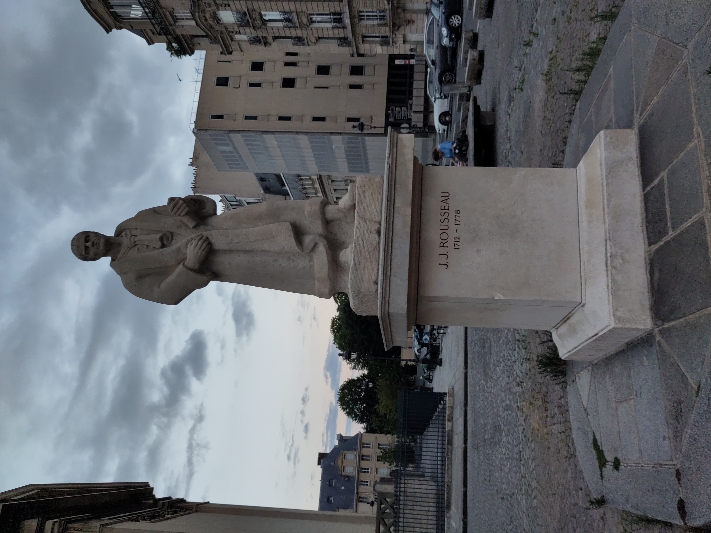
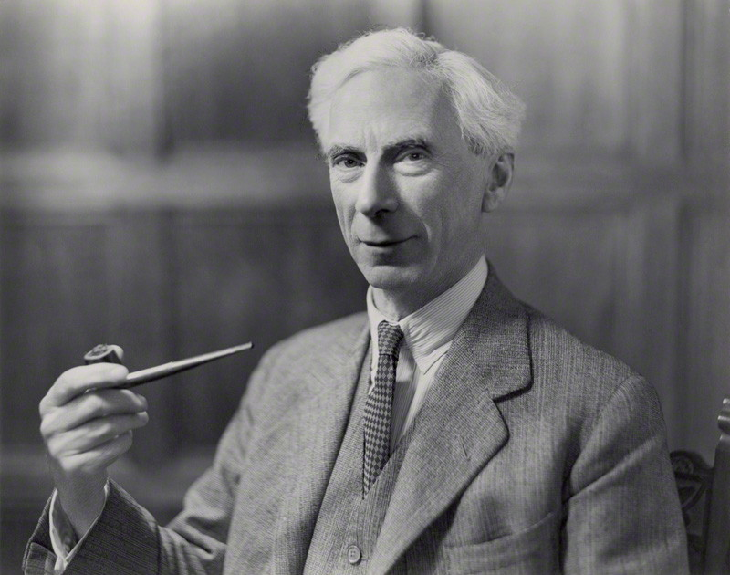
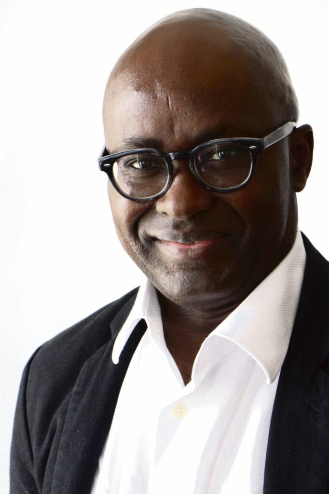
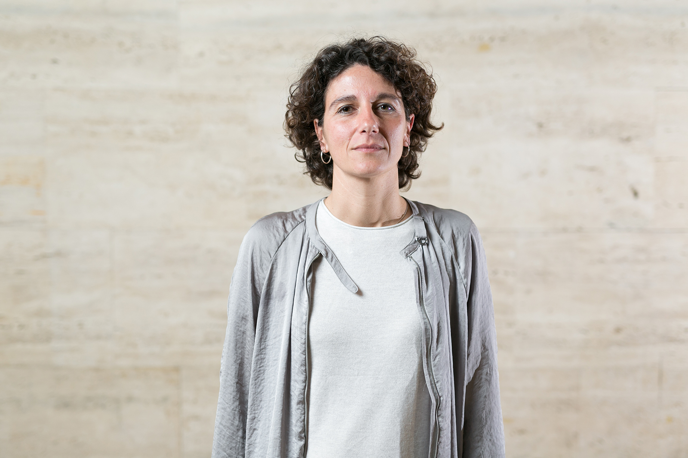

Publisert: 24.9.2025
🦸🏼♀️ Personer som har inspirert meg

Dette er en statue av Jean Jaques Rousseau. En filosof som blir sett på som ganske kontroversiell, men jeg syns ideene hans er verdt å lytte til. Kort fortalt var han kritisk til deler av den samfunnsutviklingen som kom med opplysningstiden, særlig ideen om at fornuft og sivilisasjon alltid fører til fremskritt. Jeg har tatt dette bildet når vi var på ferie i Paris.

Dette er Bertrand Russell. En annen filosof. Han er en av mine helter. Han var matematiker. Skrev en av de store verkene om matte, men gikk så videre til å bli filosof. Jeg beundrer det. Han var ikke noe glad i Rousseau. I det siste har jeg begynt å tenke at det sier noe om han, men også noe om tilstanden til den rasjonelle måten vi tolker mening i verden. Jeg har lånt dette bildet herfra.


Dette er Achille Mbembe, en Afrikans filosof. Det ilte nedover ryggen på meg når jeg leste boken hans Necroplitics. Den beskriver det vestlige politiske systemet, og dermed også hvordan verden blir styrt. Dette systemet blir styrt ved voldsbruk, enten direkte, eller indirekte mener Mbembe. Ikke overraskende trekkes blant annet Palestina frem i denne boken. Bildet er lånt herfra.


Dette er den spanske filosofen Marina Garces. Jeg syns hennes sterke oppfordring om at vi trenger en radikal ny opplysningstid er et kamprop til oss alle. I dag vet vi mer om forholdet mellom kunnskap og makt, enn om forholdet mellom kunnskap og frigjøring er en av Garces sine fem hypoteser i boka hennes. Alle hypotesene er verdt å fundere over mener jeg. Foto hentet her.